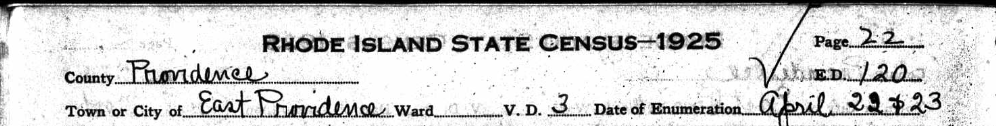
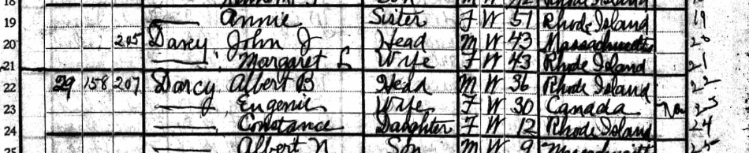
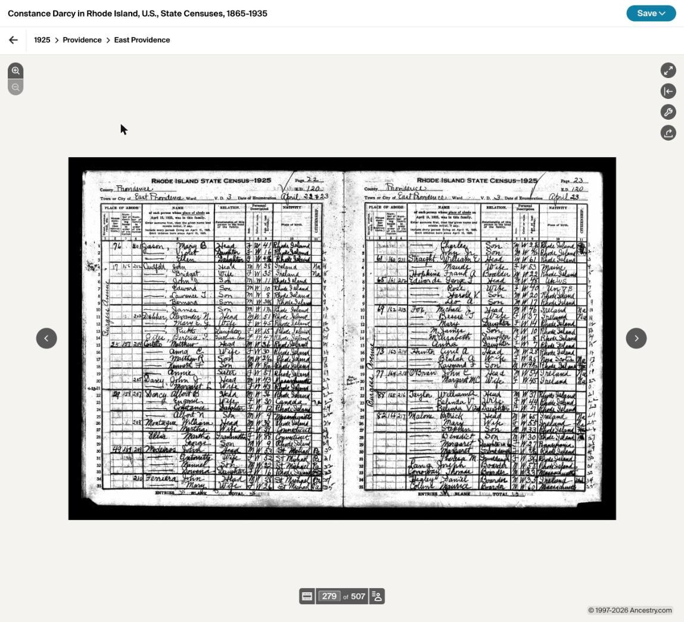

1925 Rhode Island census: the Darcys at 29 Burgess Avenue, East Providence
Rhode Island State Census, 1925; East Providence, image 279 of 507



The original record, as it appears in the register or index.
What this document is
The Rhode Island state census. A census taker went door to door and wrote down every person in each household.
What it says
Enumerated April 22 and 23, 1925. Albert B. Darcy, head, M, W, 36, born Rhode Island. Eugenie, wife, F, W, 30, born Canada, marked naturalized (Na). Constance, daughter, F, W, 12, born Rhode Island. Albert N., son, M, W, 9, born Massachusetts. In the household listed just before (family 205): John J. Darcy, head, 43, born Massachusetts, and Margaret E., wife, 43, born Rhode Island. No record yet shows how John J. was related to Albert.
Place
29 Burgess Avenue, East Providence, Rhode Island (voting district 3, ED 120, page 22, dwelling 158, family 207)
How it was read
Read from the census image; street name read from the margin (Burgess Avenue)